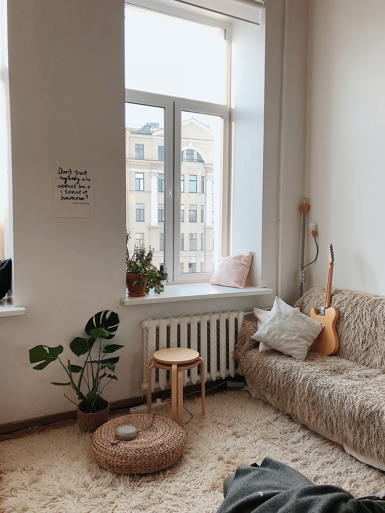

Annie is a tech savvy student. She uses smart devices like iPhone and Google Home. She tends to communicate with friends and family over WhatsApp, and is likely to send and receive
media over WhatsApp, including photos, videos, and links.
July 2020
After a long school day

One day after school, Annie turns on her Google Home smart device to listen to some music. Annie's Google Home asks her to update the device software, but Annie was not interested and lazy
to do so.
October 2020
A few months later
For a few months, Annie did not update her Google Home's software, despite the reminders from the device's application. One day, she was at home using her computer while she received a
WhatsApp notifcation.
Watch the video to proceed
Adversarial Attack
The advertisement contained a hidden voice attack that targetted smart home assistants. This audio was not clearly audible to annie, but was intended to deceive the machine learning models in smart home devices with voice command controls, such as Annie's Google Home.
Fortunately, the attacker did not have any malicious intentions and only used a benign command to "Play Music". In one worst case scenario, if Annie had used a smart doorlock system or alarm system, the attacker could have disabled the systems to gain entry to her house.
Audio Waveforms
Clean Audio Waveform
Adversarial Audio Waveform
Audio Analysis
Spectrogram Analysis
To understand the Hidden Audio attack, we can take a look at the Mel Spectrograms of both audios.
import librosa
import librosa.display
import numpy as np
import matplotlib.pyplot as plt
n_fft = 2048
hop_length = 512# Loading the audio
filename1 = 'audio.wav'
y1, sr1 = librosa.load(filename1)
# To get absolute amplitude of the short-time Fourier Transform
D1 = np.abs(librosa.stft(y1, n_fft=n_fft, hop_length=hop_length))
# Converting amplitude to decibels
DB1 = librosa.amplitude_to_db(D1, ref=np.max)
# Plotting mel frequency spectrogram
plt.figure(figsize=(10,7))
librosa.display.specshow(DB1, sr=sr1, hop_length=hop_length, x_axis='time', y_axis='log');
plt.colorbar(format='%+2.0f dB');
What is a Spectrogram?
A spectrogram is a visual representation of sound. The y-axis represents Frequency, the x-axis represents time, and the colour represents the audio volume, where a brighter colour represents a louder volume. We plot the Spectrograms of the audios on the Mel Scale, which is a scale that shows how humans can perceive differences in tones.
The adversarial attack audio is noisier than the original audio, especially in the first few seconds where the adversarial attack was injected. This can be seen by the brighter colours in the first few seconds of the adversarial example.
Audio splicing was done at the high-frequency areas (4096-8192 Hz), which happened due to audio editing or processing during the injection of the adversarial attack.
How can we prevent this?
Regularly update your devices to the latest build or software version.
Avoid clicking on suspicious links.
Avoid forwarding chain messages and do not leave devices unattended, especially in public areas.
Use a password manager like lastpass - Lastpass remembers which websites you visited and the passwords. If there is a lookalike fake website, (e.g facebo0k.com), it will not autofill the password.
If you think your password has been compromised, change your password immediately.